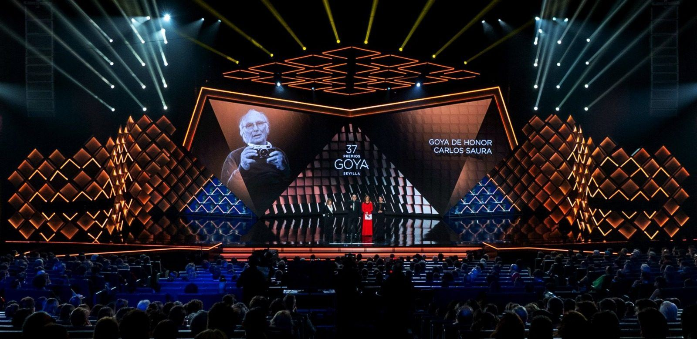
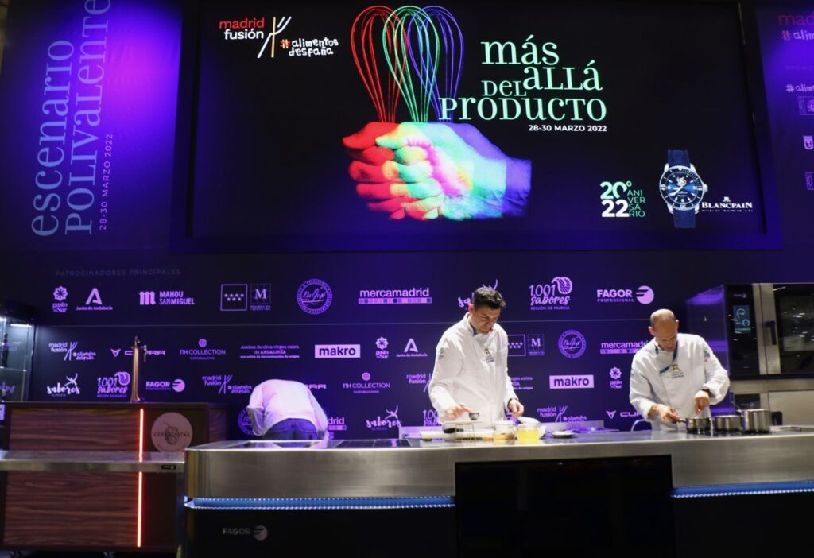
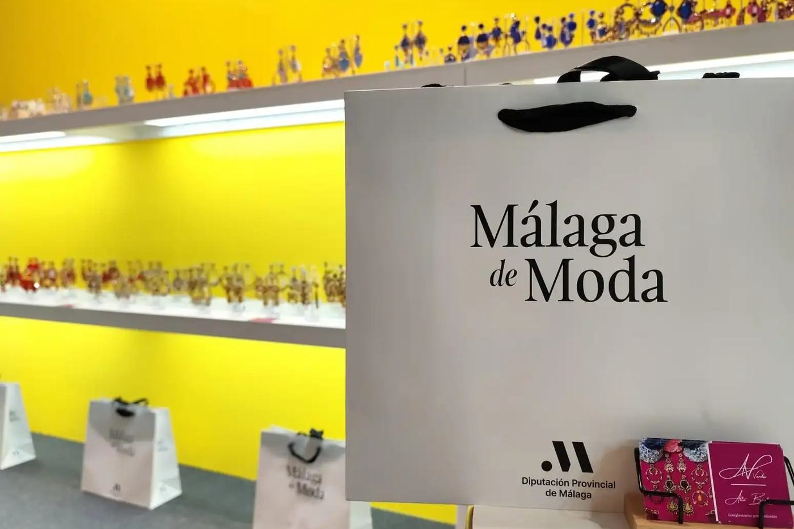
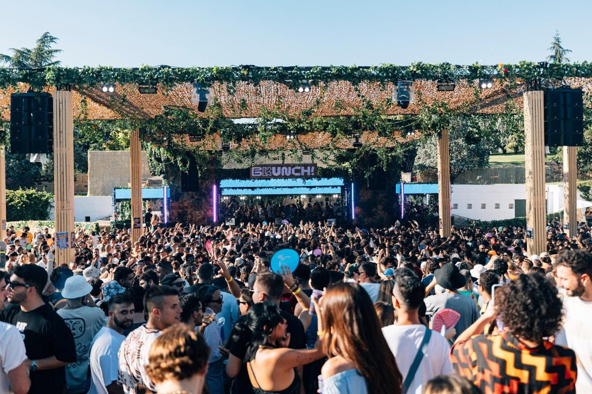
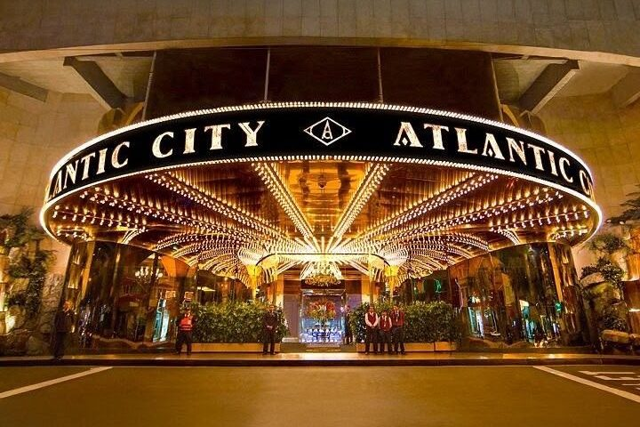
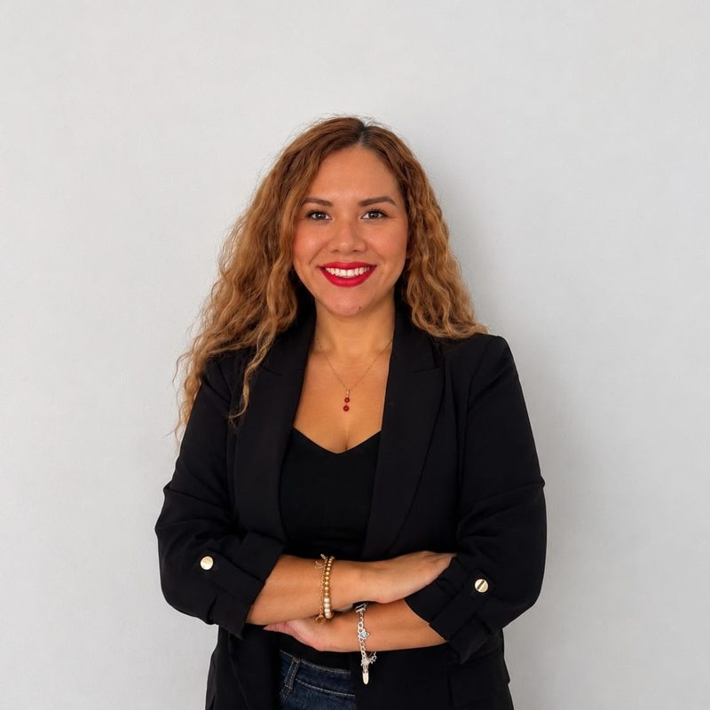

Portfolio · 2026
Hola, soy Lissett Gayoso
Producción y coordinación de eventos. Protocolo, experiencia de cliente y, próximamente, diseño de espacios retail.
Scroll para explorar
Eventos y proyectos
-

Añade aquí la foto: img/evento-1.jpg01Premios Goya
Participación en la organización y atención protocolaria durante la gala de los Premios Goya. Recepción, acreditación y acompañamiento de invitados clave del sector cinematográfico, entre ellos artistas, productores, escritores y profesionales de la industria.
-

Añade aquí la foto: img/evento-2.jpg02Madrid Fusión
Participación durante tres ediciones en la cobertura digital de Madrid Fusión. Gestión y publicación de contenidos en redes sociales, producción de fotografías y vídeos, y cobertura audiovisual en tiempo real de actividades, experiencias gastronómicas, chefs y marcas participantes, contribuyendo a potenciar la visibilidad y presencia digital del evento.
-

Añade aquí la foto: img/evento-3.jpg03La Suite
Diseñé piezas gráficas y propuestas visuales para showrooms y galas, siguiendo los lineamientos de la dirección de Marketing. Colaboré en la elaboración de propuestas adaptadas a los presupuestos establecidos, así como en la búsqueda y negociación con proveedores y la coordinación de los recursos necesarios para cada proyecto.
-
 Añade aquí la foto: img/evento-4.jpg
04
Añade aquí la foto: img/evento-4.jpg
04Brunch Electronik
Apoyé al equipo de Producción durante las etapas de preproducción, producción y postproducción del festival. Gestioné las solicitudes de materiales y herramientas de las diferentes áreas, mantuve contacto con proveedores y colaboré en la coordinación logística, el montaje y desmontaje de espacios. Además, resolví incidencias operativas durante el desarrollo del evento.
-

Añade aquí la foto: img/evento-5.jpg05Reservas y eventos privados en Big Mamma
Gestión comercial de reservas y eventos privados, asesoramiento a clientes sobre espacios y salones, identificación de necesidades y coordinación con cocina para adaptar las propuestas gastronómicas. Organización de planos de mesa, distribución de reservas y supervisión del montaje, protocolo y estándares de atención al cliente. Gestión de un volumen de 800 a 1.200 clientes diarios.
-

Añade aquí la foto: img/evento-6.jpg06Torneos y galas en Casino Atlantic City
Supervisión de torneos, galas y eventos estratégicos en sala, con cumplimiento de protocolo y de objetivos comerciales, al frente de un equipo de 15 ejecutivos.
Habilidades
Dirigí un equipo de 15 ejecutivos en Casino Atlantic City.
Creé el manual de protocolos de atención y el mapa de experiencia del cliente en Clínica Urozen.
Diseño creativo para el sector lujo en La Suite Comunicación y plan de fidelización en Den Group.
100 % del objetivo en la Universidad Europea, con 85.000 € facturados en un mes.

Sobre mí
Formada en protocolo, producción y diseño de eventos (máster, 2023) y cursando el Máster Universitario en Diseño de Espacios Retail en la Universidad Europea de Madrid. Desde 2015 trabajo en hospitalidad, experiencia de cliente y ventas consultivas: he supervisado eventos en sala, creado protocolos de atención y dirigido equipos de hasta 15 personas.
Busco incorporarme a un equipo de eventos o de diseño de espacios comerciales para seguir creciendo en producción, coordinación y diseño de experiencias.
- Máster Universitario en Diseño de Espacios Retail Universidad Europea de Madrid · en curso
- Máster en Dirección de Protocolo, Producción, Organización y Diseño de Eventos Universidad Camilo José Cela · 2023
- Diplomado en Marketing Digital Universidad San Ignacio de Loyola · 2018
- Licenciatura en Turismo, Hotelería y Gastronomía Universidad Alas Peruanas · 2016
Experiencia
Ventas consultivas y experiencia de cliente
UNIE y Universidad Europea. Cierre con perfiles directivos de España y Latinoamérica, con el 100 % del objetivo en 85.000 € de facturación mensual y 140.000 € en enero 2026.
Protocolo, reservas y eventos privados
Big Mamma Group. Gestión comercial de reservas y eventos privados, coordinación con cocina, planos de mesa y supervisión del montaje y de los estándares de atención, con 800 a 1.200 clientes diarios.
Producción y prácticas en eventos
Universidad Camilo José Cela. Prácticas en Premios Goya, Madrid Fusión, La Suite Comunicación y Brunch Electronik.
Experiencia de cliente y marketing
Clínica Urozen y Den Group. Manual de protocolos de atención y mapa de experiencia del cliente; plan de marketing, programa de fidelización y eventos corporativos.
Eventos en sala y fidelización VIP
Casino Atlantic City. Dirección de un equipo de 15 ejecutivos y supervisión de torneos, galas y eventos estratégicos con protocolo y objetivos comerciales.
Contacto